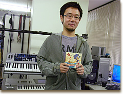
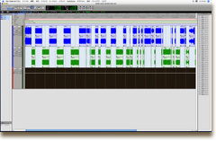

どうも、僕です。
みなさんこんにちは！
『ソニック ラッシュ アドベンチャー』の音楽を担当した大谷です。
ディレクターの大隅から、サントラの制作日記を書いてくれと頼まれまして、全４回にわたってお送りすることになりました！最後までよろしくお願いします。
今作は『ソニック・ザ・ヘッジホッグ』(PS3,XBOX360)の開発が終わった後から制作に入りました。
タイトルに『〜アドベンチャー』とつくくらいですから、楽曲も、海洋冒険の広がりを表現するため、ノリのよいサンプリングミュージックは継承しつつも、メロディアスな曲から本格的なオーケストラまで、バラエティに富んだ仕上がりになっていると思います。
大谷智哉＆南波真理子＆岡元清朗の３人で制作しました。
既にゲームを遊んでくれた人はもう知っていると思うけど、新しい○○が出来て行動範囲が広がると、○○の曲が段々とゴージャスに変化していったり、○○の中に入ると音楽が変化したり、○○に近づくと音楽のパートが増えたりと、ゲームミュージックならではの変化に富んだ演出もいろいろと仕込んでみました。
収録中の１コマ、ヴォーカルのティヘラさんです。
タイトルデモで流れるテーマ曲『A New Venture』は携帯ゲーム機のソニックシリーズでは初のヴォーカル曲になりますでしょうか？
さわやかな感じが欲しいとのオーダーがあって、女性ヴォーカルで収録しました。
さてさて、このコラム本題のサントラ制作日記ですが、ゲームの開発も終わりが見えて来た頃に、ぼちぼちサントラの準備がスタートします。
今回はゲームと同時発売＆セガダイレクト専売ということが最初に決まりました。

これが波形編集画面です…。
一番最初に取りかかる作業は、ゲーム用に制作した楽曲やジングルなどがトータルでどれくらいの収録時間になるのかを割り出し、ディスク枚数など仕様を決めていくことです。
今回は制作した全曲を完全収録で、ぎりぎりCD１枚に収まるボリュームでした。
こんな写真↑見せられても嬉しくもなんともないと思いますが、収録曲の波形を並べて曲順を決めている時の図です…。
こんな感じで曲のファイルを並び替えながら曲順を検討していきます。
音源の準備と同時に、曲名や、歌詞、スタッフクレジットなどのブックレットに掲載する全ての文字要素を整理し、アートワーク制作の準備に入ります。
ということで次回はアートワーク編です。お楽しみに！